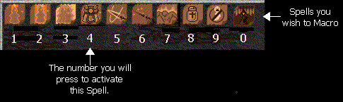

There are two sets of macro shortcuts in DarkAges, Speech and Skill/Spell. Using them will greatly increase your speed in both speaking and hunting, giving you a greater chance of survival.
Speech Macros
There are ten possible speech macros, which consist of words, phrases, or sentences you pre-program to activate at a touch of a button. They use the number keys 0-9. You must be on the "chatting" window, or the fourth window down, to use them. This is the icon which accesses that window :  . The window where you enter the macros can be found via the "Options" menu, which is the following icon on the far right-toolbar :
. The window where you enter the macros can be found via the "Options" menu, which is the following icon on the far right-toolbar :  .
.
Many people use speech macros to minimize typing necessary requests during battle. For example, warriors often have speech macros calling for "Armachd, Fas, Bean" or curse removal. Instead of having to stop fighting long enough to type 18 letters they can type 3 : one to switch to the chat window (see "Keyboard Shortcuts"), one for the macro, and the last to switch back to their skill menu. Others use speech macros for repeated phrases they find themselves using around town, such as "Greetings Aisling."
Skill and Speech Macros
These macros work identically, but are two separate sets as they are two separate screens. I'm concentrating on spell macros for this example. You can set ten macros each for skills and spells (20 total). Repeat the following procedure on the skill screen (accessed through the  icon) to set those macros.
icon) to set those macros.
To use spell macros :
1. Go to the spell window.
2. Arrange the spells you wish to assign macros.
- Click and drag the spells to fill the first ten spell slots on the screen.
- Each slot represents a number from the upper row on the keyboard (although you can also use the numeric keypad to access the macros.) For example :

3. While still on this screen, press the number of the desired spell you wish to cast.4. The spell is activated : the macro works! You're finished.
Conclusion
Remember that you have only 10 slots, and experiment with the setup to find what works best for you and your hunting style. Some things to consider are the order in which you cast spells or use skills, or mistakes you sometimes make : for example, if you are a priest who routinely accidentally curses people, you may wish to have "remove curse" handy.